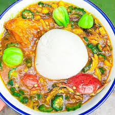

Banku and Okro stew

Okro stew
Okro stew is a popular stew which can be mostly paired with banku or akple.
the main Ingredients used in okro stew is Okra or okro. Other cooks
prefer to add ayoyo.
In this post I'm going to give you step by step on how to prepare okro stew. It is simple and straightforward.
Ingredients
- Crab
- Tuna
- Salmon
- 7 pieces Okro
- 7 pieces large onions
- Goat meat or chicken
- 200mls red palm oil
- 2 pieces medium-sized onions
- Tomato paste
- 4 pieces bell pepper
- 1 pound goat/chicken/herrings/crb/tuna/salmon
- 1 pound wele
- salt
- 200mls water
Steps for preparing Okro stew
- Wash meat and wele thoroughly and placed ina bowl
- Chop meat into desirable sizes and place ina cooking pot or saucepan
- Add little amount of water, place over a medium heat and allow to boil
- Chop onions, ginger, and garlic
- Blend chopped vegetables and pepper together until a smooth mixture is obtained
- Set some of the blended mixture aside
- Pour the blended mixture into the meat pot and alow it to steam for 10 minutes
- Add some spices
- Wash okro and chop into smaller pieces
- Put chopped okro into a cean saucepan, add water and simmer for 6 minutes
- Turn off heat and allow to cool
- Put some palm oil into a saucepan and place over medium heat
- Add sliced onion and salted fish
- cook for about 4 minutes
- Add blended pepper, ginger and garlic, allow to simmer for about 5 minutes
- Wash tomatos, chop and add to the sauce
- Now add your steamed beef, boiled crab and wele to the mixture
- stir and leave it to cook for about 10 minutes
- Pour into the mixture your cooked okro and stir thoroughly
- Add salt to taste
Banku
Banku dish is a favorite to the Fante,Ga and Ewe tribe. Banku is an energy giving food, carbohydrates. It is prepared from proportional corn dough and
Cassava tuber mixture. Below is a step by step method of preparing Banku.
Ingredients
How to prepare fermented flour for Banku recipe
- Mix your corn flour with the warm water properly in a jar or container
- After mixing the mixture well, cover it with a clean piece of cloth the container in warm
temprature for about two days. A properly fermented corn is ready for preparing banku, should have a slight sourness but with no smell.
Preparation
- Boil at least 2 cups of water in a pot
- Add the fermented corn dough slowly to your hot water in the pot
- Stir the mixture constantly and thoroughly for about 20 minutes. Make sure that the mixture is thick. If it becomes too dry add water to make it stiff.
- Roll it into orange-sized balls and use rubber to wrap it tightly to maintain their freshness and their warmth